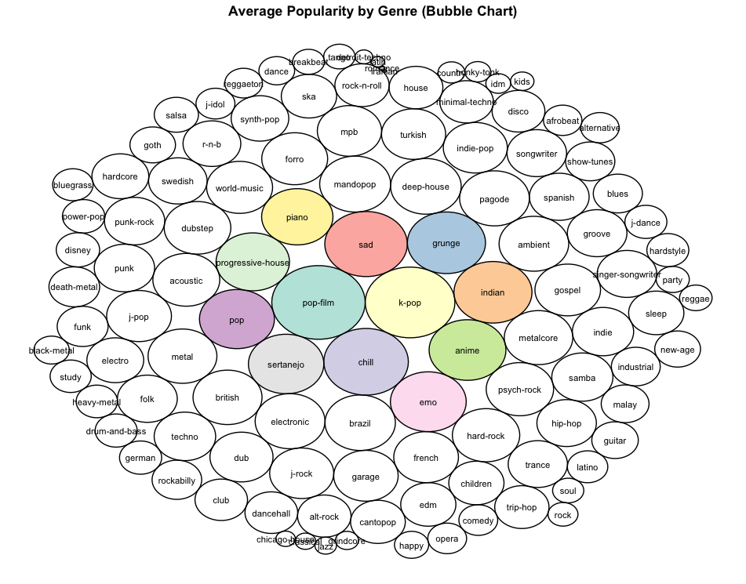
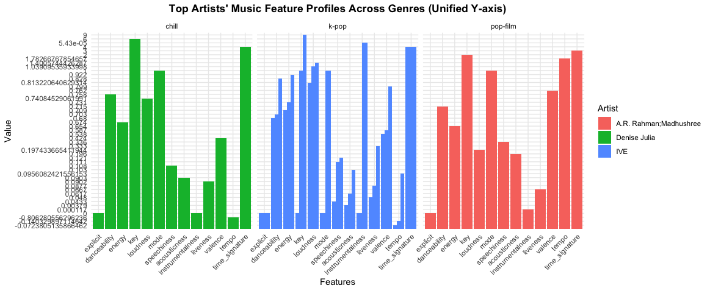

Exploring Trends and Factors Influencing Music Popularity
Hello! I'm Xiaoling Wang, and I thrive on unraveling the complexities hidden within large datasets to discover actionable insights. With a solid foundation in statistics and machine learning, I've carved out a niche in music data analysis—where I get to merge my technical expertise with my passion for music. Throughout my career, I've refined skills in predictive modeling, data visualization, and comprehensive statistical analyses. These tools allow me to provide valuable insights into music trends, artist success, and the broader market dynamics that shape the cultural landscape of music around the world. Dive into my work, and let's explore the fascinating intersection of data and music together.
This project explores the complex factors influencing music popularity, utilizing the extensive Spotify Tracks Dataset. The objective is to dissect how various musical elements—ranging from genres and artists to specific audio features like tempo and danceability—impact a song's success. By employing advanced data analytics techniques and leveraging innovative visualizations, the project seeks to uncover hidden patterns and trends that define the current music industry. This analysis not only highlights the predominant musical tastes but also provides insights into the evolving preferences of listeners worldwide. The findings aim to offer valuable perspectives to music producers, marketers, and streaming platforms, helping them to tailor their offerings to better meet the dynamic demands of the global music audience.
Below are the visual representations from my analysis:
 Here is a snippet of the R code used in my analysis:
# Load necessary libraries
library(randomForest)
library(ggplot2)
library(doParallel)
library(dplyr)
library(packcircles)
library(cowplot)
library(gridExtra)
library(tidyr)
# Set random seed for reproducibility and register parallel processing
set.seed(123)
registerDoParallel(cores = 4)
# Data Preprocessing
data <- read.csv("./dataset.csv") %>%
select(-X) %>%
mutate(
track_genre = as.factor(track_genre),
explicit = as.numeric(explicit == "true"),
mode = as.numeric(mode),
key = as.factor(key),
duration_ms = ifelse(is.na(duration_ms), median(duration_ms, na.rm = TRUE), duration_ms),
danceability = ifelse(is.na(danceability), mean(danceability, na.rm = TRUE), danceability),
loudness = scale(loudness),
tempo = scale(tempo)
)
# Analysis of genre distribution and popularity
genre_distribution <- data %>%
count(track_genre) %>%
mutate(percentage = n / sum(n) * 100) %>%
arrange(desc(percentage))
ggplot(data, aes(x = popularity)) +
geom_histogram(binwidth = 5, fill = "blue", color = "white") +
labs(title = "Distribution of Popularity", x = "Popularity", y = "Frequency")
# Analysis of average popularity by genre with visualization
genre_popularity <- data %>%
group_by(track_genre) %>%
summarise(popularity = mean(popularity)) %>%
arrange(desc(popularity))
ggplot(genre_popularity, aes(x = reorder(track_genre, popularity), y = popularity, fill = popularity)) +
geom_col() +
scale_fill_gradient(low = "lightblue", high = "darkblue") +
labs(title = "Average Popularity by Genre") +
theme_minimal() +
coord_flip()
# Random Forest Analysis for Top 3 Genres
top_genres <- head(genre_popularity$track_genre, 3)
plot_list <- lapply(top_genres, function(genre) {
genre_data <- subset(data, track_genre == genre)
model <- randomForest(popularity ~ ., data = genre_data, importance = TRUE, ntree = 300)
importance_data <- importance(model)
importance_df <- data.frame(Feature = rownames(importance_data), Importance = importance_data[,1], check.names = FALSE) %>%
arrange(desc(Importance))
ggplot(importance_df, aes(x = reorder(Feature, Importance), y = Importance, fill = Importance)) +
geom_col() +
scale_fill_gradient(low = "pink", high = "red") +
labs(title = paste("Feature Importance in", genre), x = "Importance", y = "Features") +
theme_minimal() +
coord_flip()
})
# Display all plots using cowplot
plot_grid(plotlist = plot_list, ncol = 3, align = 'v', rel_widths = rep(1, length(plot_list)))
# Analyze top artists in each genre
top_artists <- data.frame()
for (genre in top_genres) {
genre_data <- subset(data, track_genre == genre)
top_artist <- genre_data %>%
group_by(artists) %>%
summarise(avg_popularity = mean(popularity, na.rm = TRUE), song_count = n()) %>%
arrange(desc(avg_popularity)) %>%
slice(1)
top_artist$track_genre <- genre
top_artists <- rbind(top_artists, top_artist)
}
print(top_artists)
selected_artists_data <- data %>%
filter(artists %in% top_artists$artists & track_genre %in% top_genres) %>%
select(artists, track_genre, explicit, danceability, energy, key, loudness,
mode, speechiness, acousticness, instrumentalness, liveness, valence, tempo, time_signature)
melted_data <- reshape2::melt(selected_artists_data, id.vars = c("artists", "track_genre"))
# Standarise Y axis
ggplot(melted_data, aes(x = variable, y = value, fill = artists)) +
geom_bar(stat = "identity", position = "dodge") +
facet_wrap(~ track_genre, nrow = 1, scales = "fixed") +
theme_minimal() +
labs(title = "Top Artists' Music Feature Profiles Across Genres (Unified Y-axis)",
x = "Features", y = "Value",
fill = "Artist") +
theme(axis.text.x = element_text(angle = 45, hjust = 1),
plot.title = element_text(face = "bold", hjust = 0.5))